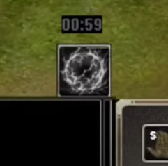
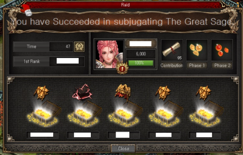

討伐戰(齊天大聖)
前置任務
條件190LV (完成才有通行證)
- Anlian村莊找NPC - Master Min (做白虎團任務那個NPC) 接100隻Spirited Monkey的任務
- 到Jiangluo附近打100隻Spirted Monkey
- 完成第一個任務, 再跟Master Min接任務, 對話多一次完成任務
- 到Jiangluo村莊找NPC - Wan Fu接任務, 交10個Root of life完成
重置時間
星期日 下午1點33分 (冬令) / 12點33分 夏令
隊長／隊員建議要求：
隊長
- 主角要250等級或以上
- BOSS 主要輸出為法術攻擊, 建議帶(金 / 朱蒙) 來增加法抗
- 精靈建議帶風精靈增加走位速度
- 強烈建議要有持續回血手段(例如2轉明女/台男)／放盾手段(印度天使)／或打手血夠多不易死（例如虎天陣）
- 需要有足夠輸出打王 (可以帶西槍對BOSS放鬼魂彈增加傷害) 目標是在５分鐘保住打手不死，同時夠傷害把王的３階段都打死
隊員
- 需要主角190等級或以上
- 起碼有狐娃 / 有高馬武的馬水平的打手 打手之外的位置都可以放其他兵來刷怪吸經
基本流程
由主角250等級以上的玩家點擊齊天大聖石像，開啟討伐UI頁面，創建隊伍 (做隊長)。然後組4位隊員(建議人數齊5人)，全部隊員準備好的狀態下，由隊長點擊Enter(右圖副本入場位置按鈕)入場
創建隊伍可以設密碼，只跟朋友打
隊長可以踢人／交給其他人做隊長 隊員可以查看隊長陣容和裝備
「討伐」中隊長的進行情況如下： 隊伍入場後，隊長點擊「被封印的齊天大聖」，即進行與BOSS1對1的戰鬥。 BOSS將經過3階段變身，隊長消滅3階段BOSS時，即討伐成功。
若隊長從戰鬥中撤退或隊長的所有傭兵皆死亡時，即討伐失敗。 進入討伐後，若超過10分鐘，即討伐失敗。
「討伐」中隊員的進行情況如下： 隊長與BOSS進行1對1戰鬥的期間，討伐怪物將出現於隊員所在的地圖。 與原有怪物相比，消滅討伐怪物可獲得更多經驗值。 討伐戰鬥中，所有隊員將進行個別戰鬥。 隊員將自動套用挑釁符和迴避符，主角死亡時立即復活。 與討伐怪物戰鬥時，隊員將在無敵增益模式、強化增益等狀況下消滅特殊怪物。 該行動可獲得「討伐」貢獻度，並根據貢獻度發送獎勵。
隊長進場跟BOSS 1對1戰鬥，把BOSS打至半血，當BOSS的體力低於50%時，BOSS將發動無敵增益效果，不受傷害。BOSS進入無敵狀態時，隊員的地圖上將會出現特殊怪物「猴戰士(討伐)」、「猴咒術士(討伐)」、「憤怒的猿公(討伐)」，需消滅該怪物中特定1種的指定數量後(280隻)才可解除BOSS的無敵增益效果。
另外，隊員消滅特定怪物時，可獲得貢獻度。
BOSS使用無敵增益效果的同時，隊長將會看到特定怪物的資訊。(如圖所示)
隊長可透過聊天或位於下方的目標設定UI告知隊員關於特定怪物的資訊。
隊員一進場，可以先打其他怪物刷經驗，直到隊長告知要打那一款指定怪物
BOSS無敵，等隊員打怪的時候，隊長可以繞場不停走動走避免被BOSS出技打中
隊員消滅指定怪物後，BOSS的無敵會消失，此時隊長可以把BOSS打死，令其變身為第２階段，再把第２階段的BOSS打至半血，然後BOSS又會開啟無敵，重複第4點步驟，隊長繞場不停走動避免被BOSS出技打中，隊員負責消滅特定怪物
隊員再次消滅指定怪物後，BOSS的無敵會消失，此時隊長可以把BOSS打死，令其變身為第３階段，再把第３階段的BOSS打至半血，然後BOSS又會開啟無敵，重複第4點步驟，隊長繞場不停走動避免被BOSS出技打中，隊員負責消滅特定怪物
隊員再次消滅指定怪物後，BOSS的無敵會消失，此時隊長可以把BOSS打死，成功通關
BOSS的行動模式
BOSS的行動模式有兩種，分別為一般狀態和無敵狀態
一般狀態時有兩種攻擊手段：近程範圍落雷及分身龍卷
落雷只要不太接近BOSS，或召坦就不會中招。但要注意一旦中招會短時間內無法行動
需要警戒的是分身龍卷，會無預警在打手位置出現分身卷起龍卷
傷害不算高但亦需要持續回復／護盾以抵擋。
一般狀態時注意保持天使護盾，龍卷出現時移動本隊即可。
Tips
分身龍卷會優先出現在打手身上，打手和本陣分開可降低補血/補盾壓力
無敵狀態時只有一種攻擊手段：範圍落雷 落雷前會在範圍內出現四方格，過一段時間後在四方格範圍內落雷 中招單位會受到傷害及一段時間無法行動 這招時間延遲較長，出現四方格後移動即可。基本上不成威脅。 無敵期間BOSS會不停召喚分身，分身只會普攻，傷害偏低，建議靠台／日冥自動排除。
隊長技能

戰鬥中，隊長可使用位於組合技能附近的「強化增益效果」。 戰鬥開始的同時，「強化增益效果」技能有1分30秒的冷卻時間，使用後有2分10秒的冷卻時間。
使用「強化增益效果」技能時，增益效果怪物「齊天大聖(分身)」、「擁有氣息的猴子(討伐)」將出現於隊員的地圖。 消滅位於地圖的增益效果怪物達目標數量時，隊長將會獲得10秒內增加50%傷害的增益效果。
消滅「齊天大聖(分身)」時，可獲得比「擁有氣息的猴子(討伐)」更多的消滅數量。
消滅增益效果怪物時可獲得貢獻度，消滅「齊天大聖(分身)」可獲得更多貢獻度。
獎勵

完場後會彈出結算介面，成功通關隊長和隊員都會有1個寶箱隨機抽物品
消滅「討伐」齊天大聖1階段、2階段時，可獲得覺醒石碎片、被封印的力量碎片、生命的精髓、精氣之珠碎片(地)、精氣之珠碎片(風)、精氣之珠碎片(雷)、精氣之珠碎片(水)、精氣之珠碎片(火)等。
消滅「討伐」齊天大聖最終階段時，可獲得覺醒石碎片、被封印的力量碎塊、深淵的精髓、精氣之珠碎片(地)、精氣之珠碎片(風)、精氣之珠碎片(雷)、精氣之珠碎片(水)、精氣之珠碎片(火)、齊天大聖的黃金裝飾碎片、齊天大聖盔甲碎片、齊天大聖的厚皮、蘊含齊天大聖氣息的毛、修羅戒指、密特拉戒指、司令戒指、毀滅者戒指等。
隊長有低機率獲得齊天大聖盔甲(綁定)、齊天大聖頭盔(綁定)等，並小幅提升戒指類等部分道具的獲得機率。
經驗值書
每100「討伐」貢獻度，可獲得1個[討伐]經驗值書(500萬)(不可交易)道具。
每400「討伐」貢獻度可額外獲得7個[討伐]經驗值書(500萬)(不可交易)道具作為區間獎勵
此區間獎勵最多套用至2,000貢獻度。
注意
「討伐」貢獻度為0的玩家無法獲得獎勵。
怪物掉落物
「擁有氣息的猴子」會掉落「天龍念珠」、「生命的精髓」、「中級精髓」。
「齊天大聖3階段」會掉落「天雷草(不可交易)」。
「齊天大聖(分身)」會掉落「天龍念珠」、「生命的精髓」、「被封印的力量碎片」。
「雷電的天狗(討伐)」會掉落「水晶法杖」。
「雷電的邪靈術師(討伐)」會掉落「天龍念珠」。
「三尾狐(討伐)」會掉落「天龍念珠」。
「巨口鬼(討伐)」會掉落「鈴鐺刀」。
「猴戰士(討伐)」會掉落「天龍念珠」。
「猴咒術士(討伐)」會掉落「天龍念珠」。
「憤怒的猿公(討伐)」會掉落「天龍念珠」。
NPC可交換/製作的物品
齊天大聖盔甲(綁定)：
需要6個齊天大聖的黃金裝飾碎片、6個齊天大聖盔甲碎片、6個齊天大聖的厚皮。
齊天大聖頭盔(綁定)：
需要4個齊天大聖的黃金裝飾碎片、4個齊天大聖盔甲碎片、蘊含齊天大聖氣息的毛。
[討伐]經驗值書(億)(不可交易)：
需要20個[討伐]經驗值書(500萬)(不可交易)道具。